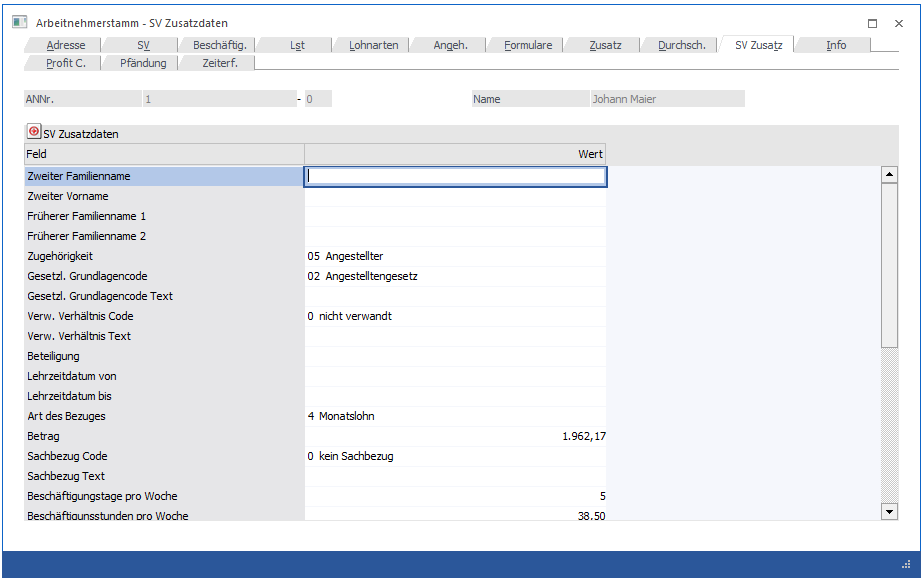

In diesem Fenster, das über den Menüpunkt
1 Stammdaten
1 Arbeitnehmer
1 Arbeitnehmerstamm
oder Schnellaufruf
1 STRG + A
1 Register Arbeitnehmerstamm - SV-Zusatz
aufgerufen wird, werden die zusätzlichen Daten erfasst, die für eine elektronische Meldung an die GKK (ELDA) benötigt werden.

Diese Meldungen können sein:
ü Anmeldung
ü Änderungsmeldung
ü Sonderzahlungsmeldung
ü Abmeldung etc.
Die einzelnen Felder sind im Wesentlichen selbsterklärend, so dass auf eine weitere Erläuterung verzichtet wird. Werden hier Daten hinterlegt, werden diese bei einer Verwendung einer elektronischen Meldung entsprechend vorgeschlagen und müssen nicht separat erfasst werden.
Hinweis:
In den SV-Zusatzdaten gibt es die Option
Ø Unterliegt dem Tabakmonopolgesetz
Diese Option ist zu setzen wenn:
ü Der Dienstgeber Inhaber eines Tabakfachgeschäftes und
ü der Dienstnehmer ein Angehöriger nach § 31Abs. 2 TabMG 1996 (Tabakmonopolgesetz 1996) ist.
Diese Angabe ist für die Versichertenmeldungen notwendig. Dies Option ist nur in den SV-Zusatzdaten zu setzten und wird dann bei allen entsprechenden Meldungen mit berücksichtigt. In den einzelnen Meldungen ist diese Option dann allerdings nicht ersichtlich.
KUG
Diese Felder können nur dann bearbeitet werden, wenn das Modul WinLine KUG im Einsatz ist:
Ø AN nimmt an KUG teil
Mit dieser Option kann gesteuert werden, dass der AN an der Kurzarbeit teilnimmt. Erst wenn diese Option gesetzt ist, können z.B. in der Einzelabrechnung spezielle Funktionen für die Berechnung der Kurzarbeit eingesetzt werden.
Ø KUG Stamm
In diesem Feld kann der Betriebsstamm eingetragen werden, in dem die KUG-Einstellungen für diesen AN-Typ (kann pro Betrieb unterschiedlich sein) hinterlegt sind. Aus den Betriebsdaten werden dann Informationen wie Anzahl Wochenstunden, Reduzierung etc. für die Abrechnung ausgelesen.
Diese beiden Felder können bei Bedarf z.B. auch über den Schnellumstellungsassistenten umgestellt werden.